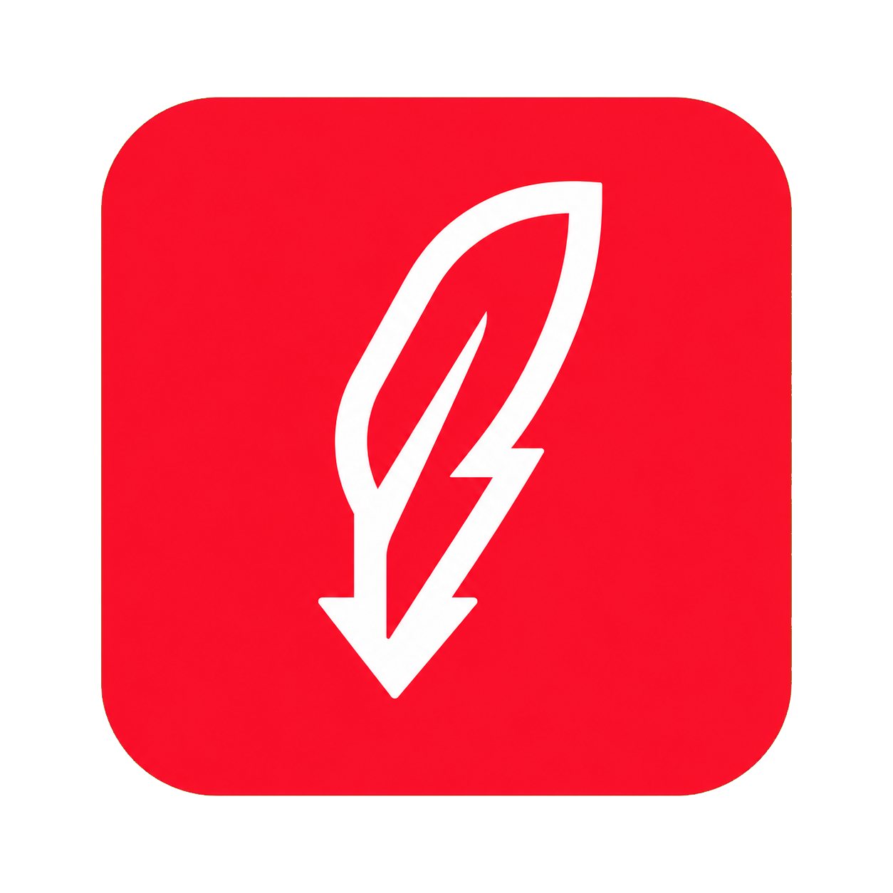

Feather + lightning notch + arrow in one outline. Rich story, but three ideas compete and it smears at 16 px.
A play button turned to point down, landing on a line. Media in, file out. The bar is "the file landed": the exact path lyt hands back.
The current idea, refined: a solid feather ("lyt" = light) whose quill becomes the download arrow. Keeps the heritage, drops the clutter.
A terminal prompt > next to a download. Ask in the terminal, get the file. Says "CLI for agents" before you read a word.

The "y" in lyt drawn as two paths merging into one download arrow: you and your agent, one exact file. It works as a letter, an icon, and a wordmark.
A download arrow inside JSON braces: the lyt.result.v1 document agents read. Very on-message for developers, less so for everyone else.